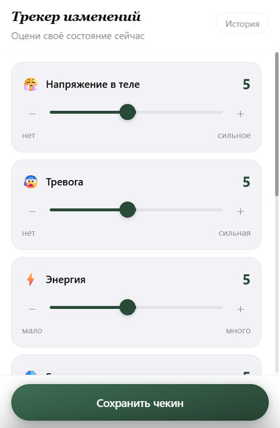
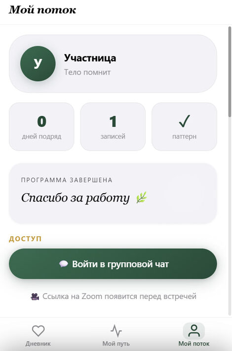

"The Body Remembers" – Telegram Mini App
How it started
"The Body Remembers" is an online integrative body-therapy program: 5 weeks, 9 live Zoom sessions, a closed cohort.
The program worked and the results were there. But one systemic problem kept eating away at them: between sessions, participants "disappeared". The insight from a session faded within a day or two – and by the next session a person arrived as if from a blank slate. Not out of laziness, but because there was no tool to help them keep working between meetings.
- The body journal wasn't kept regularly – notes on a phone that no one reads.
- Triggers and acute reactions got lost – the moment passed unprocessed.
- The facilitator worked blind – with no data on what happened between sessions.
- There was no tangible proof of results for future sales.
- The chat filled up with repeated questions: "where's the Zoom link?", "what time is the session?".
The solution
A Telegram Mini App – an app right inside Telegram. It opens with a single button in the bot: nothing to download, no registration, nowhere to go – the participant is already in Telegram, and the tool is right there.
For those not yet in the cohort, the app is visible but locked – this creates the feeling of a private club and adds extra motivation to buy.
What's inside
- Body journalAn interactive body map: tap a zone, choose a sensation, add a note. Entry history + reminders from the bot.
- Export the journal to PDFThe whole journey by dates, zones and sensations – in one click. Tangible proof of the work.
- Stop-reaction journalLogging triggers: what happened, which zone reacted, intensity 1–10, a note.
- AI assistantWork through an acute moment here and now, without waiting for the next session.
- Pattern diagnosticsA test at the start of the program: the participant learns her behavior pattern under stress.
- Weekly check-in with a chartA short check-in on how she's doing – week-by-week dynamics are built automatically.
- Before-and-after surveysA measurable result: what it was like before, what changed after – for marketing and case studies.
- Reviews, schedule, chatReviews straight to the facilitator; all dates and Zoom links; contact with the cohort and the facilitator – from the app.
What the facilitator got
- Participants work between sessions – journal, stop-reactions, check-ins.
- Analytics on each one: what hurt before and what changed after.
- Proof of effectiveness – in numbers and records, not just "it got better".
- Ready-made marketing material – before/after surveys, reviews, dynamics.
- The chat is free of repeated questions, and participants no longer get lost between meetings.
How it looks




